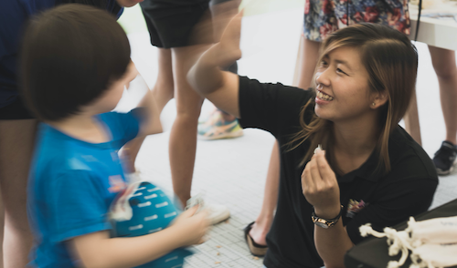

|  | SAM Shu Qin
Research Assistant (2015 - Present)
|
Research Interests
Coral reef restoration, coral reef ecology, coastal management, marine biodiversity and conservation, science communication and community engagement
Current Research
Intense coastal development over the years has caused reef degradation and increased sediment load in Singapore’s marine environment, posing a challenge to coral restoration efforts. My current research mainly focuses on understanding how coral respond to impacts of coastal development and climate change. I also assess the post-transplantation performance of different coral species and evaluate various coral rearing and transplantation techniques to formulate the best strategies for coral restoration and reef management in Singapore. With my training in science communication, I hope to increase public knowledge and promote discussions in marine science and conservation through various public engagement activities.
Academic and Employment History
M.Sc. (Science Communications), National University of Singapore: 2018 – present
Research Assistant, Tropical Marine Science Institute: 2015 - present
Aquaculture specialist, Temasek Life Sciences Laboratory: 2014 - 2015
B.Sc. (Honours) in Biological Sciences, Nanyang Technological University of Singapore: 2008 – 2012
Publications
Ng CSL, Huang D, Toh KB, Sam SQ, Kikuzawa YP, Toh TC, Taira D, Chan YKS, Hung LZT, Sim WT, Rashid AR, Afiq-Rosli L, Ng NK, Chou LM (2020). Responses of urban reef corals during the 2016 mass bleaching event. Marine Pollution Bulletin, 154: 111111. doi:10.1016/j.marpolbul.2020.111111
Ng CSL, Lim JX, Sam SQ, Kikuzawa YP, Toh TC, Wee TW, Sim WT, Ng NK, Huang D, Chou LM (2019). Variability in skeletal bulk densities of common hard corals in Southeast Asia. Coral Reefs, 38: 1133–1143. doi:10.1007/s00338-019-01852-2
Ying SML, Sam SQ. 2019. Small but Deadly. In: Chou LM, Huang DW, Jaafar Z, Toh TC, Tun KPP,. (2019). Private lives: An exposé of Singapore's Coral Reefs. Singapore: Lee Kong Chian Natural History Museum, National Univ. of Singapore. Pp. 76 – 77
Sam SQ, Toh TC. 2019. Sustaining coral reefs in a busy port. In: Chou LM, Huang DW, Jaafar Z, Toh TC, Tun KPP,. (2019). Private lives: An exposé of Singapore's Coral Reefs. Singapore: Lee Kong Chian Natural History Museum, National Univ. of Singapore. Pp. 170 – 171
Chou LM, Toh TC, Kikuzawa YP, Loke HX, Ng CSL, Sam SQ, Afiq-Rosli L, Toh KB, Taira D, Poquita-Du RC. 2019. Re-fragmentation of the coral Echinopora lamellosa (Esper 1795) for mariculture. Proceedings of the Asian Conference on Sustainability, Energy & the Environment 2019, May 20-22 2019, Tokyo. International Academic Forum, Aichi, Japan. pp 9-19.
Huang D, Friess D, Kikuzawa YP, Lee WK, Loke LHL, Ng CSL, Sam SQ, Todd PA, and Toh TC. 2018. Chapter 6: Mitigative measures. In: Jaafar Z, Huang D, Tanzil JTI, Ow YX, Yap N (eds) The Singapore Blue Plan 2018. The Singapore Institute of Biology. Pp. 155-174
Chou LM, Sam SQ, Toh TC, Ng CSL. 2018. The relevance of reef restoration in the continually changing marine environment of Singapore. Journal of Marine Science and Technology 18(3): 278-285 DOI: 10.15625/1859-3097/18/3/10801
Wee SYC, Sam SQ, Sim WT, Ng CSL, Taira D, Afiq-Rosli L, Kikuzawa YP, Toh TC, Chou LM. (2019). The role of in situ coral nurseries in supporting mobile invertebrate epifauna. Journal for Nature Conservation, 50, 125710.
Sam SQ, Ng JY, Toh CH, Lim LMF, Beng SS-L, Mercado M (2018). A shortsnout boxfish, Ostracion rhinorhynchos in the Singapore Strait. Singapore Biodiversity Records, 2018: 76
Sam SQ (2018). Bearded leatherjacket at Sentosa. Singapore Biodiversity Records, 2018: 72–73.
Sam SQ, Taira D, Ng CSL, Toh TC, Chou LM (2018). First record of cuttlefish egg-deposition at an in situ coral nursery. Galaxea, 20: 9–10. doi:10.3755/galaxea.20.1_9
Kikuzawa YP, Toh TC, Ng CSL, Sam SQ, Taira D, Afiq‐Rosli L, Chou LM. (2018). Quantifying growth in maricultured corals using photogrammetry. Aquaculture Research, 49(6), 2249-2255
Samsuri AN, Kikuzawa YP, Taira D, Sam SQ, Sim WT, Ng CSL, Afiq-Rosli L, Chou LM. (2018). The effectiveness of Trapezia cymodoce in defending its host coral Pocillopora acuta against corallivorous Drupella. Marine Biology, 165(4), 70
Reef Ecology Study Team (2018). A Preliminary Survey of the Coral Reefs at Pulau Bawah. Singapore: National University of Singapore, 15 pp.
Taira D, Toh TC, Sam SQ, Ng CSL, Chou LM (2017). Coral nurseries as habitats for juvenile corallivorous butterflyfish. Marine Biodiversity, 47: 787–788. doi:10.1007/s12526-016-0513-2
Sam SQ, Toh TC, Kikuzawa YP, Taira D, Ng CSL, Taira D, Afiq-Rosli L, Tan KS, Chou LM (2017). Egg capsules and veligers of the corallivorous muricid gastropod Drupella rugosa (Born, 1778). Invertebrate Reproduction and Development
Toh TC, Ng CSL, Loke HX, Taira D, Toh KB, Afiq-Rosli L, Du RC, Cabaitan PC, Sam SQ, Preslie KYP, Chou LM, Song T (2017). A cost-effective approach to enhance scleractinian diversity on artificial shorelines. Ecological Engineering 99: 249-357
Sam SQ, Kikuzawa YP, Taira D, Ng CSL, Toh TC and Chou LM. 2016. First observation of Drupella rugosa egg capsules on the scleractinian coral Pocillopora damicornis. Bulletin of Marine Science 92:353-354.